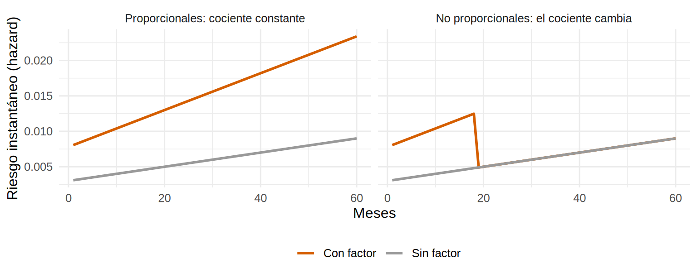
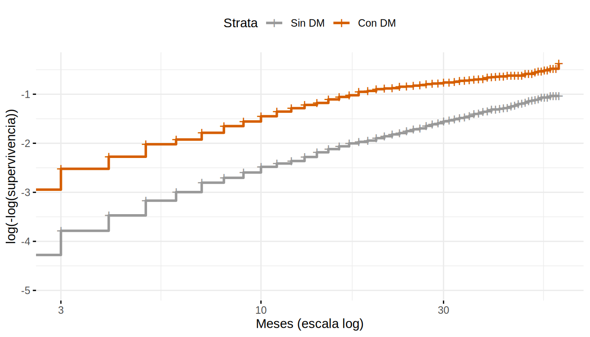
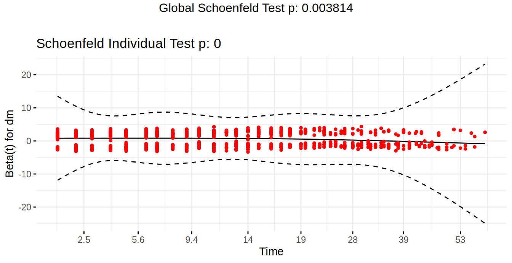
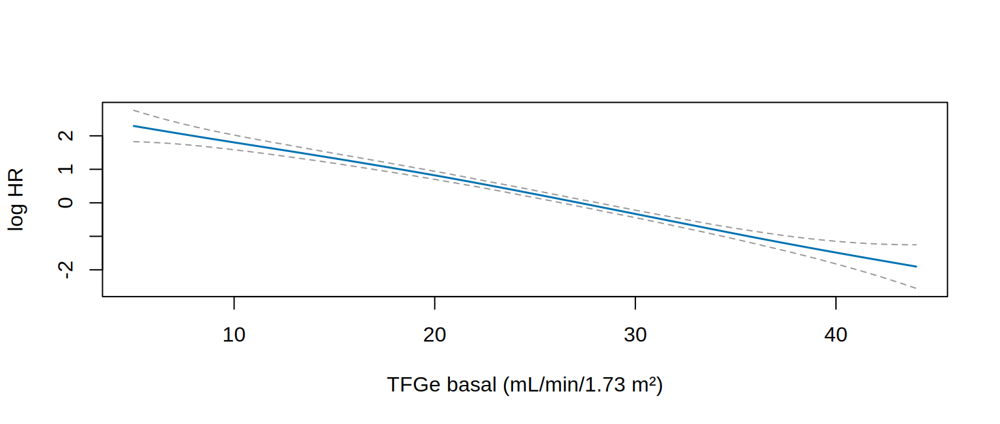
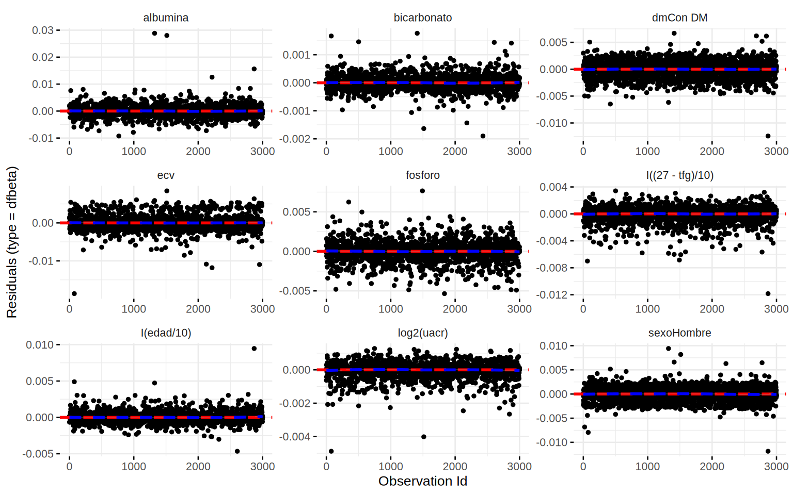

library(tidyverse)
library(survival)
library(survminer)
library(broom)
theme_set(theme_minimal(base_size = 12))
coh <- read_csv("Bases/cohorte_pronostico.csv") |>
mutate(sexo = factor(sexo, levels = c("Mujer", "Hombre")),
dm = factor(dm, levels = 0:1, labels = c("Sin DM", "Con DM")),
krt = as.integer(estado == 1))
cox_aj <- coxph(
Surv(tiempo_meses, krt) ~ dm + I((27 - tfg) / 10) + log2(uacr) + I(edad / 10) + sexo +
albumina + fosforo + bicarbonato + ecv,
data = coh
)Riesgos proporcionales: cómo verificar y qué hacer
Nota🩺 Escenario
En 9.2 notaste que las curvas de riesgo acumulado de los pacientes con y sin diabetes se separan rápido al principio y luego corren casi paralelas. En 9.3 el modelo de Cox te dio un único HR para la diabetes (1.8). Un colega te pregunta: “¿ese 1.8 es el efecto al mes 6, al mes 24 o un promedio de todo?”. Si el efecto de la diabetes cambia con el tiempo, la respuesta es: un promedio que no describe bien a ninguno. Este subcapítulo te enseña a detectarlo y qué hacer.
Lo que vamos a hacer
- Entender qué significa “riesgos proporcionales” con un dibujo.
- Verificarlo de tres maneras (log-log, residuos de Schoenfeld, interacción con el tiempo).
- Corregirlo con HR por periodo y comprobar contra la verdad.
- Revisar también linealidad e influyentes.
Paso 1: qué supone el modelo
El modelo de Cox supone que el cociente de riesgos entre dos pacientes es constante en el tiempo: si la diabetes multiplica el riesgo por 2 al mes 3, también lo multiplica por 2 al mes 30. Las curvas de riesgo de los dos grupos pueden subir y bajar, pero siempre guardan la misma proporción. Si no es así, el HR único del modelo es un promedio con poco significado.
Un dibujo con curvas hipotéticas lo aclara. A la izquierda, los riesgos instantáneos de dos grupos suben con el tiempo, pero uno es siempre 2.6 veces el otro. A la derecha, la ventaja del grupo expuesto desaparece después del mes 18:
tiempo <- 1:60
h0 <- 0.003 * (1 + tiempo / 30) # riesgo del grupo de referencia (sube con el tiempo)
bind_rows(
tibble(escenario = "Proporcionales: cociente constante", tiempo, `Sin factor` = h0, `Con factor` = 2.6 * h0),
tibble(escenario = "No proporcionales: el cociente cambia", tiempo, `Sin factor` = h0,
`Con factor` = h0 * ifelse(tiempo <= 18, 2.6, 1))
) |>
pivot_longer(c(`Sin factor`, `Con factor`), names_to = "grupo", values_to = "riesgo") |>
mutate(escenario = fct_inorder(escenario)) |>
ggplot(aes(tiempo, riesgo, color = grupo)) +
geom_line(linewidth = 1) +
facet_wrap(~ escenario) +
scale_color_manual(values = c(`Sin factor` = "#999999", `Con factor` = "#D55E00"), name = NULL) +
labs(x = "Meses", y = "Riesgo instantáneo (hazard)") +
theme(legend.position = "bottom")
Paso 2: tres formas de comprobarlo
Método 1: gráfico log-log
Si los riesgos son proporcionales, las curvas de \(\ln(-\ln S(t))\) de los dos grupos son paralelas (separadas por una distancia constante en el eje vertical).
km_dm <- survfit(Surv(tiempo_meses, krt) ~ dm, data = coh)
ggsurvplot(km_dm, data = coh, fun = "cloglog", xlim = c(3, 60), break.x.by = 12,
xlab = "Meses (escala log)", ylab = "log(-log(supervivencia))",
legend.labs = c("Sin DM", "Con DM"), palette = c("#999999", "#D55E00"),
ggtheme = theme_minimal(base_size = 11))
Qué vemos. Las curvas se acercan con el tiempo en lugar de mantenerse paralelas: la ventaja de riesgo de la diabetes se atenúa. Este método solo sirve para variables categóricas.
Método 2: residuos de Schoenfeld, cox.zph()
Contrasta formalmente, para cada variable, si su efecto cambia con el tiempo (correlaciona sus residuos de Schoenfeld con el tiempo):
zph <- cox.zph(cox_aj)
zph chisq df p
dm 2.00e+01 1 7.7e-06
I((27 - tfg)/10) 8.02e-01 1 0.3706
log2(uacr) 5.29e+00 1 0.0214
I(edad/10) 1.47e-01 1 0.7014
sexo 3.50e-01 1 0.5542
albumina 3.77e-04 1 0.9845
fosforo 3.05e-01 1 0.5807
bicarbonato 6.52e-01 1 0.4192
ecv 5.14e-01 1 0.4735
GLOBAL 2.43e+01 9 0.0038Cómo leer la tabla: una fila por variable y una global. Un p < 0.05 sugiere que el efecto de esa variable cambia con el tiempo. Aquí la diabetes tiene p 7.7e-06: viola el supuesto. La UACR muestra una violación leve (p = 0.02) que, con 3 000 pacientes, no es alarmante; el resto cumple. La prueba global también sale significativa, pero la causa principal es la diabetes.
ggcoxzph(zph, var = "dm", ggtheme = theme_minimal(base_size = 11))
El gráfico muestra el coeficiente de la diabetes en función del tiempo: alto al principio y bajando hacia cero. Si se cumpliera la proporcionalidad, sería una recta horizontal.
Método 3: una interacción con el tiempo
Se agrega un término variable × f(tiempo). Con tt() en coxph:
coef exp(coef) se(coef) z Pr(>|z|)
dm 1.3910722 4.0191571 0.19477002 7.142127 9.189774e-13
tt(dm) -0.3150029 0.7297868 0.07594837 -4.147592 3.359905e-05El coeficiente tt(dm) es negativo y significativo: el efecto de la diabetes decae con \(\ln(t)\).
Advertencia⚠️ Cómo usar la prueba y el gráfico
- Con muestras grandes la prueba detecta violaciones triviales; con pocos pacientes no detecta violaciones grandes. Mira el gráfico, no solo el p.
- Una violación pequeña de una covariable de ajuste rara vez cambia el efecto que te interesa; una violación de la exposición sí.
- La prueba depende de la transformación del tiempo (
transform = "km"por defecto).
Paso 3: qué hacer cuando no se cumple
| Opción | Cuándo | Costo |
|---|---|---|
Estratificar por la variable (strata()) |
Variable de ajuste no proporcional que no te interesa estimar | No obtienes su HR |
| HR por periodo (dividir el tiempo) | La variable sí te interesa y el efecto cambia en el tiempo | Hay que elegir los cortes |
Término tiempo-dependiente (tt()) |
Se conoce la forma del cambio | Más complejo de interpretar |
| RMST o riesgo a tiempo fijo | Cuando el HR resume mal el efecto | Depende del horizonte (9.6) |
| Modelos paramétricos (Weibull, log-logístico) | Se justifica una forma para el riesgo basal | Supuestos más fuertes |
La opción más clara: HR por periodo
Dividimos el seguimiento en dos periodos (0-18 y más de 18 meses) con survSplit() y estimamos un HR de la diabetes en cada uno. survSplit() convierte a cada paciente en dos filas (una por periodo), con el formato (tstart, tstop]:
sp <- survSplit(Surv(tiempo_meses, krt) ~ ., data = coh, cut = 18, episode = "periodo") |>
mutate(dm_temprano = as.integer(dm == "Con DM" & periodo == 1),
dm_tardio = as.integer(dm == "Con DM" & periodo == 2))
cox_per <- coxph(
Surv(tstart, tiempo_meses, krt) ~ dm_temprano + dm_tardio + I((27 - tfg) / 10) + log2(uacr) +
I(edad / 10) + sexo + albumina + fosforo + bicarbonato + ecv,
data = sp
)
hr_per <- summary(cox_per)$conf.int[1:2, c(1, 3, 4)] |> round(2)
hr_per exp(coef) lower .95 upper .95
dm_temprano 2.35 1.97 2.79
dm_tardio 0.99 0.76 1.30Contra la verdad
En la simulación, el efecto verdadero de la diabetes fue de HR = 2.6 durante los primeros 18 meses y 1.0 después.
# A tibble: 3 × 3
quien estimado verdad
<chr> <dbl> <dbl>
1 HR único (modelo de 9.3) 1.82 NA
2 HR por periodo: 0-18 meses 2.35 2.59
3 HR por periodo: > 18 meses 0.99 1 Qué vemos. El HR por periodo recupera la verdad: la diabetes multiplica el riesgo por 2.35 (IC 1.97 a 2.79) durante los primeros 18 meses y no aporta riesgo adicional después (HR 0.99, IC 0.76 a 1.3). El HR único (1.8) promedia ambas situaciones y no describe a ninguna.
Es una forma verosímil de pasar en la vida real si, por ejemplo, la diabetes acelera la falla renal en los pacientes susceptibles que la tienen, y quienes llegan sin falla renal a los 18 meses son una población ya seleccionada (“depleción de susceptibles”). En datos reales, esa forma debe respaldarla un razonamiento clínico y no solo el ajuste del modelo.
Paso 4: linealidad e influyentes
Dos comprobaciones más, como en 8.5. Primero, ¿es la TFGe lineal en el log-HR? Una spline penalizada (pspline) deja que los datos dibujen la forma:

La relación es aproximadamente lineal, como se simuló. Segundo, ¿hay pacientes que mueven el resultado? ggcoxdiagnostics(type = "dfbeta") grafica, para cada coeficiente, cuánto cambiaría si quitaras a cada paciente:
ggcoxdiagnostics(cox_aj, type = "dfbeta", linear.predictions = FALSE, ggtheme = theme_minimal(base_size = 10))
Los cambios son diminutos en comparación con los coeficientes (la escala del eje vertical es de milésimas): ningún paciente aislado es muy influyente. Los residuos de desvianza (type = "deviance") sirven para detectar pacientes que el modelo predice mal: valores positivos muy grandes son quienes tuvieron el evento “demasiado pronto”, y negativos grandes quienes “duraron demasiado”.
Importante🎯 En resumen
-
Verifica la proporcionalidad: gráfico log-log,
cox.zph()con su gráfico y términos con el tiempo; mira el gráfico, no solo el p. - Si falla en una variable de ajuste: estratifica. Si falla en la exposición: HR por periodo, términos tiempo-dependientes, RMST o riesgos a tiempo fijo.
- Un HR promedio de un efecto que cambia en el tiempo no describe a nadie.
- Revisa también linealidad (splines) e influyentes (
dfbeta).
Ejercicio
- Verifica con
cox.zph()la proporcionalidad solo para la albuminuria y graficaggcoxzph(zph, var = "log2(uacr)"). - Estima el HR de la diabetes en tres periodos (0-12, 12-24, > 24 meses).
- Estratifica el modelo por diabetes (
strata(dm)) y compara los HR de TFGe y UACR con los del modelo completo. ¿Cambian?